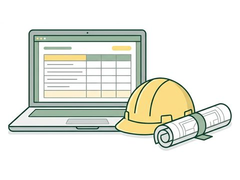
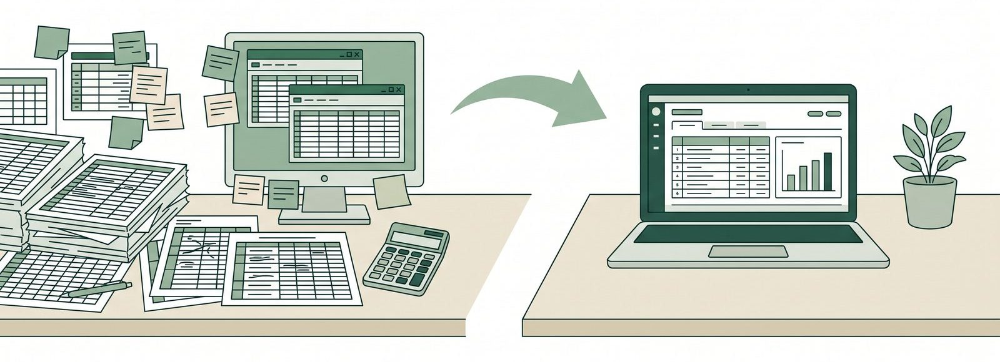
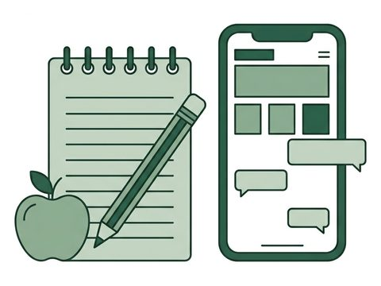
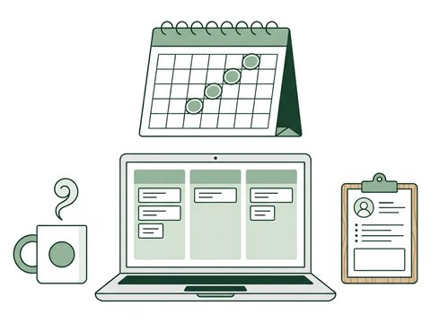

建設業（設備・内装・建築）／経理1〜2名
経費を入れると、工事別の原価と会計用ファイルが出る
Excelの工事台帳と集計が一致し、税理士事務所の読込テスト（TKC FX2）を通過して、2026年10月に本番稼働。現金出納帳や複数税率など、使いながら出た要望を反映しています。
作って、終わりにしません。
御社のExcelも、紙の台帳も、手作業の転記も。いまの運用を見て、必要な部分だけをシステムにします。たとえば建設会社では、経費を入力すると、工事ごとの原価と会計ソフト用のファイルまで出ます。

FIT — 30秒でわかる
業務と人数を選ぶと、作るもの・金額・期間の目安が出ます。
日付・金額・取引先・工事を登録すると、工事別の集計・損益・原価率が画面に出ます。対象月の仕訳データを会計ソフト用のファイルで出力し、経理担当者か会計事務所が読み込みます。いまのExcelの項目は、そのまま引き継ぎます。
含まれるもの
目安です。業務の内容と人数で変わるので、30分の相談で具体的な金額と期間をお伝えします。
CASES — 事例
いずれも、先に具体的なものを作ってから、運用が始まりました。

建設業（設備・内装・建築）／経理1〜2名
経費を入れると、工事別の原価と会計用ファイルが出る
Excelの工事台帳と集計が一致し、税理士事務所の読込テスト（TKC FX2）を通過して、2026年10月に本番稼働。現金出納帳や複数税率など、使いながら出た要望を反映しています。

教育事業（学級経営メソッド）／代表1名
HPと公式LINEで、登録から個別面談までが自動で進む
事業の立ち上げに合わせてHPと公式LINE（登録特典の自動配信・個別面談への導線）を作り、2026年8月に公開。いまは保守を続けながら、次の仕組み（学習支援のシステム）を一緒に設計しています。
サービス業／代表1名
決まった問い合わせには、チャットボットが答える
2026年4月から運用中。受け答えは、要望が出るたびに調整しています。

人材紹介業／代表1名
週1回の定例で、AI活用と案件管理の仕組みを一緒に作る
3か月12回のプログラムを終えて、期限なしの継続に。2026年6月から、AIを使った業務の進め方と、顧客・案件管理の仕組みづくりを週1回の定例で進めています。
社名・画面は、面談でお見せできる範囲でご説明します。
HOW — 作って、つないで、直し続ける
01 — 作る
いまの運用を見て、必要な部分だけをシステムにします。社長・担当者ごとの権限と、誰がいつ何を変えたかの記録もつきます。御社専用の環境に作るので、他社の都合で画面が変わることはありません。
工事台帳（イメージ）
| 工事 | 費目 | 金額 |
|---|---|---|
| A邸 改修 | 材料費 | 128,400 |
| A邸 改修 | 外注費 | 260,000 |
| B社 設備 | 材料費 | 54,900 |
02 — つなぐ
入力した数字を、会計ソフトの取込ファイル、スプレッドシート、公式LINEの返信へ受け渡します。会計ソフトに合わせてファイルの形式を設計し、読込テストまで一緒に確認します。
受け渡し（イメージ）
03 — 直し続ける
要望は、使い始めてから出てきます。稼働の見守り・不具合の修正・問い合わせ対応・バックアップに加えて、改善の相談まで、運用に含みます。作って終わりにしません。
要望と反映（イメージ）
WHY — なぜ、この価格と速さで
設計・実装・テストにAIを使い、人手で書いていた部分を短くします。御社専用のシステムを、既製品を組み合わせるのに近い費用と期間で作れるのはこのためです。
御社専用の環境を用意する仕組み、契約書、導入の手順書（データの準備→環境の設定→読込テスト→運用開始）が揃っています。この型に、御社の業務を当てはめて作ります。
ヒアリングした人が設計し、作り、運用も見ます。言ったことが伝わっていない、担当が変わって話が戻る、ということが起きません。
PROCESS — 進め方
資料を揃えてからでなくて大丈夫です。いま使っているExcelか帳票を1つお見せいただければ、始まります。
PRICE — 料金
初期費用は作るものの種類で決まり、運用は「守る・育てる・伴走」の3段から選びます。
| 作るもの | 目安 | 含まれるもの |
|---|---|---|
| 既製の仕組みの構築・カスタマイズ 公式LINE・チャットボット・HP・Addness・スプレッドシート自動化 | 10〜30万円 | 設計、構築、初期データの登録、操作説明 |
| 御社専用のシステム（1つの業務） 台帳・顧客管理・日報・予約・請求など | 30〜60万円 | 設計、専用環境、データ移行、会計側との照合、読込テスト、操作説明 |
| 複数の業務・外部との連携 | 60万円〜 | お見積り |
守る
まず安定して動かしたい会社に
20,000円／月
育てる
使いながら、帳票や項目を足していきたい会社に
50,000円／月
伴走
業務の進め方ごと、AIと一緒に変えたい会社に
100,000円／月
既製の仕組みだけの保守は1万円／月から。追加ユーザーは1名あたり2,000円／月。初期費用の分割はご相談ください。対応範囲・連絡方法・契約期間などの条件は、個別の契約で確認します。
FAQ
項目や帳票を、うちの運用に合わせて変えられますか？
はい。御社専用に作るので、項目・帳票・権限は御社の運用に合わせます。使い始めてからの変更は、運用プランの改善枠か、お見積りで対応します。
いまのExcelのデータは引き継げますか？
はい。取引先・案件・過去の明細など、必要なデータを移してから運用を始めます。項目名もいまのExcelに合わせます。
会計ソフトは何でも対応できますか？
TKCのFX2は対応済みです。ほかの会計ソフトは、取込ファイルの形式に合わせて設計し、契約の前に取り込めることを確認します。
データはどこに保管され、誰が見られますか？
クラウドに御社専用の環境を用意し、他社のデータと混ぜません。見られるのは御社が登録した担当者だけで、権限ごとに操作を分け、誰がいつ何を変えたかの記録が残ります。阿部は、設定・保守・障害対応に必要な範囲でだけアクセスします。
入力したデータが、外部のAIに送られることはありますか？
標準の機能は、入力したデータをAIサービスへ送りません。AIを使う機能（たとえば手書き見積の読み取り）を足す場合は、事前にご説明します。
やめたいときは？データはどうなりますか？
データは御社のものです。契約終了後30日以内に、CSVなど汎用の形式でお渡しし、そのあと当方が保有するデータを消去します。
CONTACT — 30分の相談
Excelや帳票をお見せいただければ、その場で「作る」か「既製の道具を組む」か、費用と期間の目安をお伝えします。面談はオンライン（Google Meet）を基本に、ご希望があれば伺います。日程の候補は、こちらから3つお出しします。
合わないと判断した場合は、その場でそうお伝えします。売り込みの電話はしません。
お問い合わせ窓口：ライフ（阿部 龍也・群馬県）。設計・開発・運用を同じ人が担当します。